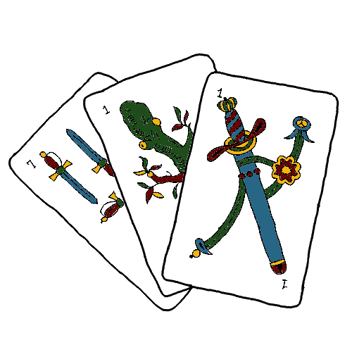
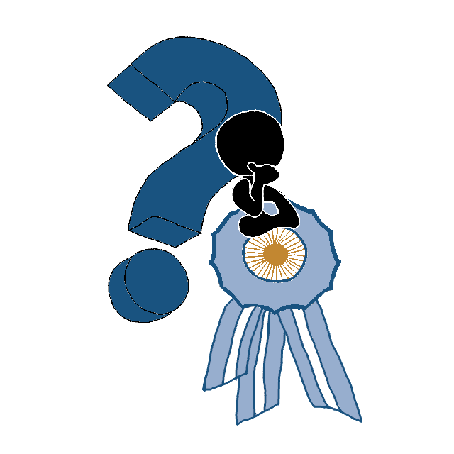

Quién es Quién

Click para jugarSer argentino implica formar parte de una historia, una geografía y una cultura que nos atraviesan, muchas veces sin que lo notemos del todo. Desde los hechos que marcaron nuestro pasado hasta la enorme diversidad de paisajes que recorren el país, de la puna al glaciar, del litoral a la llanura pampeana, pasando por las costumbres, las expresiones artísticas y las figuras que forman parte de nuestro imaginario colectivo, todo eso construye una identidad compartida.
Sin embargo, esa identidad no es una sola cosa: cambia según la región, la época y quién la cuenta. Conocerla en su diversidad, más que reducirla a una sola imagen, es también una forma de entender mejor de dónde venimos y qué tenemos en común los que somos de acá.
Por eso creamos estos juegos, para que no solo te diviertas, sino también, para que siempre se tenga presente todo lo que nos representa como argentinos.

Click para jugar
Click para jugar Click para jugar
Click para jugar